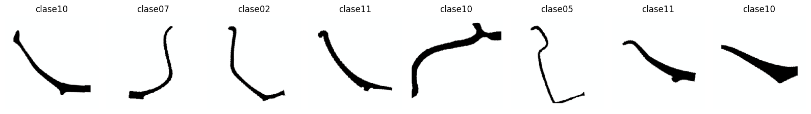
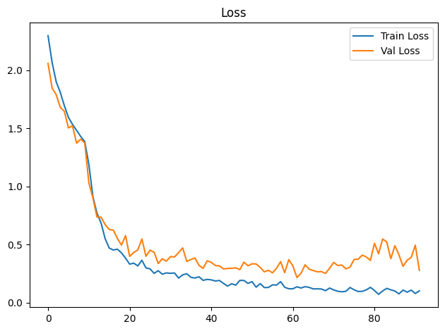
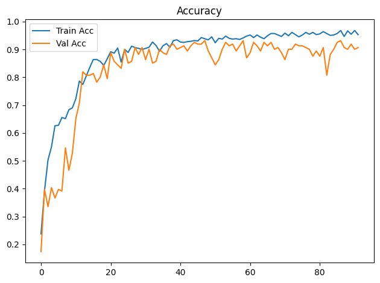
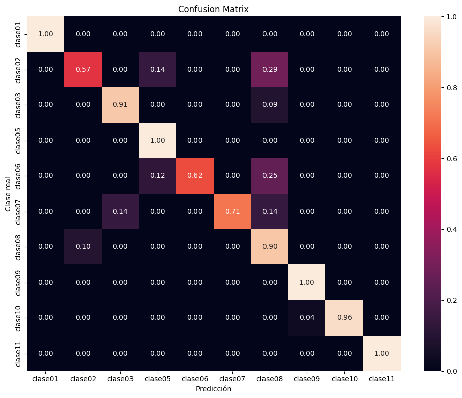

Dispositivo utilizado para procesamiento: CUDA - NVIDIA GeForce GTX 1650Entrenamiento de CNN ResNet-18 con Transfer Learning
Objetivos
- Construir un modelo baseline de clasificación mediante transfer learning con ResNet18 preentrenada.
- Entrenar inicialmente solo la capa clasificadora y descongelar
layer4enUNFREEZE_EPOCHcon una tasa de aprendizaje menor. - Aplicar transformaciones y aumentación de datos al conjunto de entrenamiento.
- Entrenar y validar el modelo registrando loss y accuracy por época.
- Detener el entrenamiento si val_loss no mejora suficientemente durante la paciencia configurada.
- Evaluar el modelo de la mejor época de validación sobre el conjunto de prueba.
- Analizar los resultados mediante accuracy, precision, recall, F1-score, reporte de clasificación y matriz de confusión normalizada.
- Guardar los pesos restaurados de la mejor época de validación (o los finales si se desactiva la parada anticipada).
Dispositivo para procesamiento
División de datos
La pertenencia de cada imagen a train, val o test se lee de la metadata generada por el notebook de división. La relación se realiza mediante ruta_relativa; por tanto, el split no se recalcula aunque cambien la semilla o los parámetros del entrenamiento.
Dataset seleccionado: completos
Directorio de datos: /home/rafael/Dev/vasijas/data/10.cuadrados_divididos_en_train_val_y_test
Metadata de split: data/10.cuadrados_divididos_en_train_val_y_test/metadata.csv
Clases: clase01 clase02 clase03 clase05 clase06 clase07 clase08 clase09 clase10 clase11
Split persistido -> train: 749, val: 161, test: 161
Conteo train por clase: [18, 32, 50, 39, 36, 34, 196, 14, 248, 82]
Pesos de clase: [4.161, 2.341, 1.498, 1.921, 2.081, 2.203, 0.382, 5.35, 0.302, 0.913]Epoch 1/300
Train Loss: 2.2957 | Train Acc: 0.2377 | Val Loss: 2.0567 | Val Acc: 0.1739
Tiempo de epoch: 0:00:08.342737
Epoch 2/300
Train Loss: 2.0656 | Train Acc: 0.3925 | Val Loss: 1.8452 | Val Acc: 0.3975
Tiempo de epoch: 0:00:05.144530
Epoch 3/300
Train Loss: 1.8996 | Train Acc: 0.5033 | Val Loss: 1.7884 | Val Acc: 0.3354
Tiempo de epoch: 0:00:05.170447
Epoch 4/300
Train Loss: 1.8086 | Train Acc: 0.5501 | Val Loss: 1.6800 | Val Acc: 0.4037
Tiempo de epoch: 0:00:05.221795
Epoch 5/300
Train Loss: 1.6933 | Train Acc: 0.6262 | Val Loss: 1.6450 | Val Acc: 0.3665
Tiempo de epoch: 0:00:05.214470
Epoch 6/300
Train Loss: 1.5937 | Train Acc: 0.6275 | Val Loss: 1.5024 | Val Acc: 0.3975
Tiempo de epoch: 0:00:05.251229
Epoch 7/300
Train Loss: 1.5326 | Train Acc: 0.6555 | Val Loss: 1.5209 | Val Acc: 0.3913
Tiempo de epoch: 0:00:05.216922
Epoch 8/300
Train Loss: 1.4812 | Train Acc: 0.6515 | Val Loss: 1.3713 | Val Acc: 0.5466
Tiempo de epoch: 0:00:05.076937
Epoch 9/300
Train Loss: 1.4291 | Train Acc: 0.6836 | Val Loss: 1.4060 | Val Acc: 0.4658
Tiempo de epoch: 0:00:05.183953
Epoch 10/300
Train Loss: 1.3849 | Train Acc: 0.6903 | Val Loss: 1.3732 | Val Acc: 0.5280
Tiempo de epoch: 0:00:05.135639
Epoch 11: se descongela layer4 con lr=3.00e-05 (head lr=3.00e-04)
Epoch 11/300
Train Loss: 1.1894 | Train Acc: 0.7236 | Val Loss: 1.0303 | Val Acc: 0.6522
Tiempo de epoch: 0:00:08.805900
Epoch 12/300
Train Loss: 0.9103 | Train Acc: 0.7864 | Val Loss: 0.8991 | Val Acc: 0.7081
Tiempo de epoch: 0:00:06.815819
Epoch 13/300
Train Loss: 0.7687 | Train Acc: 0.7744 | Val Loss: 0.7354 | Val Acc: 0.8199
Tiempo de epoch: 0:00:06.824883
Epoch 14/300
Train Loss: 0.6843 | Train Acc: 0.8051 | Val Loss: 0.7354 | Val Acc: 0.8075
Tiempo de epoch: 0:00:06.811130
Epoch 15/300
Train Loss: 0.5492 | Train Acc: 0.8358 | Val Loss: 0.6707 | Val Acc: 0.8075
Tiempo de epoch: 0:00:06.839316
Epoch 16/300
Train Loss: 0.4691 | Train Acc: 0.8638 | Val Loss: 0.6285 | Val Acc: 0.8137
Tiempo de epoch: 0:00:06.940845
Epoch 17/300
Train Loss: 0.4522 | Train Acc: 0.8638 | Val Loss: 0.6235 | Val Acc: 0.7826
Tiempo de epoch: 0:00:06.766496
Epoch 18/300
Train Loss: 0.4592 | Train Acc: 0.8571 | Val Loss: 0.5514 | Val Acc: 0.8012
Tiempo de epoch: 0:00:06.912645
Epoch 19/300
Train Loss: 0.4275 | Train Acc: 0.8425 | Val Loss: 0.4945 | Val Acc: 0.8447
Tiempo de epoch: 0:00:06.797961
Epoch 20/300
Train Loss: 0.3821 | Train Acc: 0.8665 | Val Loss: 0.5764 | Val Acc: 0.7950
Tiempo de epoch: 0:00:06.834529
Epoch 21/300
Train Loss: 0.3307 | Train Acc: 0.8919 | Val Loss: 0.3975 | Val Acc: 0.8882
Tiempo de epoch: 0:00:07.018733
Epoch 22/300
Train Loss: 0.3390 | Train Acc: 0.8865 | Val Loss: 0.4311 | Val Acc: 0.8571
Tiempo de epoch: 0:00:06.920858
Epoch 23/300
Train Loss: 0.3155 | Train Acc: 0.9052 | Val Loss: 0.4534 | Val Acc: 0.8447
Tiempo de epoch: 0:00:06.831965
Epoch 24/300
Train Loss: 0.3644 | Train Acc: 0.8545 | Val Loss: 0.5471 | Val Acc: 0.8323
Tiempo de epoch: 0:00:06.959533
Epoch 25/300
Train Loss: 0.2980 | Train Acc: 0.8999 | Val Loss: 0.3981 | Val Acc: 0.9006
Tiempo de epoch: 0:00:06.881259
Epoch 26/300
Train Loss: 0.2899 | Train Acc: 0.8892 | Val Loss: 0.4511 | Val Acc: 0.8509
Tiempo de epoch: 0:00:06.810386
Epoch 27/300
Train Loss: 0.2514 | Train Acc: 0.9119 | Val Loss: 0.4329 | Val Acc: 0.8571
Tiempo de epoch: 0:00:07.020061
Epoch 28/300
Train Loss: 0.2742 | Train Acc: 0.9065 | Val Loss: 0.3366 | Val Acc: 0.9068
Tiempo de epoch: 0:00:06.880652
Epoch 29/300
Train Loss: 0.2444 | Train Acc: 0.9039 | Val Loss: 0.3774 | Val Acc: 0.8820
Tiempo de epoch: 0:00:06.806836
Epoch 30/300
Train Loss: 0.2552 | Train Acc: 0.8999 | Val Loss: 0.3567 | Val Acc: 0.9068
Tiempo de epoch: 0:00:06.847170
Epoch 31/300
Train Loss: 0.2519 | Train Acc: 0.9039 | Val Loss: 0.3958 | Val Acc: 0.8634
Tiempo de epoch: 0:00:06.796457
Epoch 32/300
Train Loss: 0.2546 | Train Acc: 0.9079 | Val Loss: 0.3925 | Val Acc: 0.9006
Tiempo de epoch: 0:00:06.886087
Epoch 33/300
Train Loss: 0.2110 | Train Acc: 0.9266 | Val Loss: 0.4303 | Val Acc: 0.8509
Tiempo de epoch: 0:00:06.883722
Epoch 34/300
Train Loss: 0.2386 | Train Acc: 0.9146 | Val Loss: 0.4702 | Val Acc: 0.8571
Tiempo de epoch: 0:00:06.791820
Epoch 35/300
Train Loss: 0.2483 | Train Acc: 0.8932 | Val Loss: 0.3541 | Val Acc: 0.9006
Tiempo de epoch: 0:00:06.905037
Epoch 36/300
Train Loss: 0.2179 | Train Acc: 0.9132 | Val Loss: 0.3699 | Val Acc: 0.8882
Tiempo de epoch: 0:00:06.859363
Epoch 37/300
Train Loss: 0.2111 | Train Acc: 0.9212 | Val Loss: 0.3835 | Val Acc: 0.8820
Tiempo de epoch: 0:00:06.845226
Epoch 38/300
Train Loss: 0.2220 | Train Acc: 0.9079 | Val Loss: 0.3203 | Val Acc: 0.9130
Tiempo de epoch: 0:00:06.940464
Epoch 39/300
Train Loss: 0.1915 | Train Acc: 0.9319 | Val Loss: 0.2940 | Val Acc: 0.9193
Tiempo de epoch: 0:00:06.862508
Epoch 40/300
Train Loss: 0.1996 | Train Acc: 0.9346 | Val Loss: 0.3594 | Val Acc: 0.9006
Tiempo de epoch: 0:00:06.825021
Epoch 41/300
Train Loss: 0.1956 | Train Acc: 0.9266 | Val Loss: 0.3461 | Val Acc: 0.9068
Tiempo de epoch: 0:00:06.866236
Epoch 42/300
Train Loss: 0.1857 | Train Acc: 0.9252 | Val Loss: 0.3191 | Val Acc: 0.9130
Tiempo de epoch: 0:00:06.835269
Epoch 43/300
Train Loss: 0.1903 | Train Acc: 0.9279 | Val Loss: 0.3157 | Val Acc: 0.8944
Tiempo de epoch: 0:00:06.838934
Epoch 44/300
Train Loss: 0.1651 | Train Acc: 0.9292 | Val Loss: 0.2894 | Val Acc: 0.9130
Tiempo de epoch: 0:00:06.798118
Epoch 45/300
Train Loss: 0.1416 | Train Acc: 0.9319 | Val Loss: 0.2938 | Val Acc: 0.9255
Tiempo de epoch: 0:00:06.949204
Epoch 46/300
Train Loss: 0.1624 | Train Acc: 0.9306 | Val Loss: 0.2952 | Val Acc: 0.9193
Tiempo de epoch: 0:00:06.911283
Epoch 47/300
Train Loss: 0.1501 | Train Acc: 0.9426 | Val Loss: 0.2986 | Val Acc: 0.9193
Tiempo de epoch: 0:00:06.792241
Epoch 48/300
Train Loss: 0.1907 | Train Acc: 0.9386 | Val Loss: 0.2838 | Val Acc: 0.9317
Tiempo de epoch: 0:00:06.840768
Epoch 49/300
Train Loss: 0.1904 | Train Acc: 0.9346 | Val Loss: 0.3482 | Val Acc: 0.8944
Tiempo de epoch: 0:00:06.981299
Epoch 50/300
Train Loss: 0.1657 | Train Acc: 0.9453 | Val Loss: 0.3168 | Val Acc: 0.8696
Tiempo de epoch: 0:00:06.777725
Epoch 51/300
Train Loss: 0.1801 | Train Acc: 0.9239 | Val Loss: 0.3337 | Val Acc: 0.8447
Tiempo de epoch: 0:00:06.814160
Epoch 52/300
Train Loss: 0.1325 | Train Acc: 0.9399 | Val Loss: 0.3325 | Val Acc: 0.8634
Tiempo de epoch: 0:00:06.934400
Epoch 53/300
Train Loss: 0.1634 | Train Acc: 0.9372 | Val Loss: 0.3023 | Val Acc: 0.9006
Tiempo de epoch: 0:00:06.845048
Epoch 54/300
Train Loss: 0.1290 | Train Acc: 0.9479 | Val Loss: 0.2650 | Val Acc: 0.9255
Tiempo de epoch: 0:00:06.844944
Epoch 55/300
Train Loss: 0.1302 | Train Acc: 0.9399 | Val Loss: 0.2780 | Val Acc: 0.9130
Tiempo de epoch: 0:00:06.827934
Epoch 56/300
Train Loss: 0.1529 | Train Acc: 0.9372 | Val Loss: 0.2563 | Val Acc: 0.9193
Tiempo de epoch: 0:00:06.938375
Epoch 57/300
Train Loss: 0.1507 | Train Acc: 0.9386 | Val Loss: 0.2956 | Val Acc: 0.8944
Tiempo de epoch: 0:00:07.032028
Epoch 58/300
Train Loss: 0.1802 | Train Acc: 0.9359 | Val Loss: 0.3521 | Val Acc: 0.9130
Tiempo de epoch: 0:00:06.790896
Epoch 59/300
Train Loss: 0.1315 | Train Acc: 0.9413 | Val Loss: 0.2571 | Val Acc: 0.9317
Tiempo de epoch: 0:00:06.757207
Epoch 60/300
Train Loss: 0.1190 | Train Acc: 0.9479 | Val Loss: 0.3697 | Val Acc: 0.8696
Tiempo de epoch: 0:00:07.050150
Epoch 61/300
Train Loss: 0.1189 | Train Acc: 0.9519 | Val Loss: 0.3152 | Val Acc: 0.8882
Tiempo de epoch: 0:00:06.863002
Epoch 62/300
Train Loss: 0.1361 | Train Acc: 0.9426 | Val Loss: 0.2157 | Val Acc: 0.9255
Tiempo de epoch: 0:00:06.847492
Epoch 63/300
Train Loss: 0.1254 | Train Acc: 0.9519 | Val Loss: 0.2525 | Val Acc: 0.9130
Tiempo de epoch: 0:00:06.952551
Epoch 64/300
Train Loss: 0.1371 | Train Acc: 0.9439 | Val Loss: 0.3254 | Val Acc: 0.8944
Tiempo de epoch: 0:00:06.963104
Epoch 65/300
Train Loss: 0.1305 | Train Acc: 0.9386 | Val Loss: 0.2875 | Val Acc: 0.9255
Tiempo de epoch: 0:00:06.875991
Epoch 66/300
Train Loss: 0.1178 | Train Acc: 0.9493 | Val Loss: 0.2755 | Val Acc: 0.9130
Tiempo de epoch: 0:00:06.831599
Epoch 67/300
Train Loss: 0.1181 | Train Acc: 0.9573 | Val Loss: 0.2647 | Val Acc: 0.9255
Tiempo de epoch: 0:00:06.807379
Epoch 68/300
Train Loss: 0.1169 | Train Acc: 0.9573 | Val Loss: 0.2671 | Val Acc: 0.9006
Tiempo de epoch: 0:00:06.905812
Epoch 69/300
Train Loss: 0.1023 | Train Acc: 0.9519 | Val Loss: 0.2507 | Val Acc: 0.9068
Tiempo de epoch: 0:00:06.804618
Epoch 70/300
Train Loss: 0.1253 | Train Acc: 0.9466 | Val Loss: 0.2959 | Val Acc: 0.8882
Tiempo de epoch: 0:00:06.774327
Epoch 71/300
Train Loss: 0.1091 | Train Acc: 0.9586 | Val Loss: 0.3453 | Val Acc: 0.8634
Tiempo de epoch: 0:00:06.837198
Epoch 72/300
Train Loss: 0.0974 | Train Acc: 0.9493 | Val Loss: 0.3192 | Val Acc: 0.9006
Tiempo de epoch: 0:00:06.883196
Epoch 73/300
Train Loss: 0.0932 | Train Acc: 0.9613 | Val Loss: 0.3233 | Val Acc: 0.9006
Tiempo de epoch: 0:00:06.786195
Epoch 74/300
Train Loss: 0.0973 | Train Acc: 0.9533 | Val Loss: 0.2901 | Val Acc: 0.9193
Tiempo de epoch: 0:00:06.776328
Epoch 75/300
Train Loss: 0.1301 | Train Acc: 0.9453 | Val Loss: 0.3047 | Val Acc: 0.9130
Tiempo de epoch: 0:00:06.942270
Epoch 76/300
Train Loss: 0.1101 | Train Acc: 0.9519 | Val Loss: 0.3707 | Val Acc: 0.9130
Tiempo de epoch: 0:00:07.120433
Epoch 77/300
Train Loss: 0.0957 | Train Acc: 0.9613 | Val Loss: 0.3734 | Val Acc: 0.9068
Tiempo de epoch: 0:00:06.813666
Epoch 78/300
Train Loss: 0.0966 | Train Acc: 0.9546 | Val Loss: 0.4082 | Val Acc: 0.9006
Tiempo de epoch: 0:00:06.810372
Epoch 79/300
Train Loss: 0.1095 | Train Acc: 0.9613 | Val Loss: 0.3925 | Val Acc: 0.8758
Tiempo de epoch: 0:00:06.782046
Epoch 80/300
Train Loss: 0.1312 | Train Acc: 0.9533 | Val Loss: 0.3629 | Val Acc: 0.8944
Tiempo de epoch: 0:00:06.870362
Epoch 81/300
Train Loss: 0.1039 | Train Acc: 0.9559 | Val Loss: 0.5098 | Val Acc: 0.8758
Tiempo de epoch: 0:00:06.942058
Epoch 82/300
Train Loss: 0.0712 | Train Acc: 0.9640 | Val Loss: 0.4201 | Val Acc: 0.9068
Tiempo de epoch: 0:00:06.842891
Epoch 83/300
Train Loss: 0.0999 | Train Acc: 0.9573 | Val Loss: 0.5470 | Val Acc: 0.8075
Tiempo de epoch: 0:00:06.927665
Epoch 84/300
Train Loss: 0.1225 | Train Acc: 0.9506 | Val Loss: 0.5216 | Val Acc: 0.8820
Tiempo de epoch: 0:00:06.986382
Epoch 85/300
Train Loss: 0.1098 | Train Acc: 0.9519 | Val Loss: 0.3776 | Val Acc: 0.9006
Tiempo de epoch: 0:00:06.867597
Epoch 86/300
Train Loss: 0.0997 | Train Acc: 0.9573 | Val Loss: 0.4894 | Val Acc: 0.9255
Tiempo de epoch: 0:00:06.864106
Epoch 87/300
Train Loss: 0.0750 | Train Acc: 0.9680 | Val Loss: 0.4111 | Val Acc: 0.9317
Tiempo de epoch: 0:00:06.938225
Epoch 88/300
Train Loss: 0.1077 | Train Acc: 0.9466 | Val Loss: 0.3115 | Val Acc: 0.9068
Tiempo de epoch: 0:00:06.852437
Epoch 89/300
Train Loss: 0.0897 | Train Acc: 0.9666 | Val Loss: 0.3652 | Val Acc: 0.9006
Tiempo de epoch: 0:00:06.964962
Epoch 90/300
Train Loss: 0.1075 | Train Acc: 0.9546 | Val Loss: 0.3879 | Val Acc: 0.9193
Tiempo de epoch: 0:00:07.015416
Epoch 91/300
Train Loss: 0.0781 | Train Acc: 0.9680 | Val Loss: 0.4941 | Val Acc: 0.9006
Tiempo de epoch: 0:00:06.818829
Epoch 92/300
Train Loss: 0.1010 | Train Acc: 0.9533 | Val Loss: 0.2774 | Val Acc: 0.9068
Tiempo de epoch: 0:00:06.873628
Parada anticipada en epoch 92: 30 épocas sin mejora suficiente de val_loss.
Se restauran los pesos de epoch 62 (val_loss=0.2157).
Tiempo total de entrenamiento: 0:10:20.516961

Test Acc: 0.9068
precision recall f1-score support
clase01 1.00 1.00 1.00 4
clase02 0.50 0.57 0.53 7
clase03 0.91 0.91 0.91 11
clase05 0.80 1.00 0.89 8
clase06 1.00 0.62 0.77 8
clase07 1.00 0.71 0.83 7
clase08 0.86 0.90 0.88 42
clase09 0.60 1.00 0.75 3
clase10 1.00 0.96 0.98 53
clase11 1.00 1.00 1.00 18
accuracy 0.91 161
macro avg 0.87 0.87 0.85 161
weighted avg 0.92 0.91 0.91 161

Modelo guardado en: output/models/model_resnet18_bs16_lr3e-4_weighted_unfreeze.pth